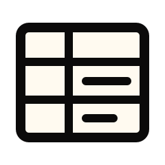
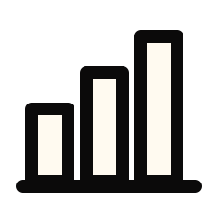

Materi kuliah,
untuk semua.

Baca. Dengar. Telusuri.
Ubah PDF menjadi materi yang lebih mudah dibaca, didengar, dan ditelusuri.
Spasi untuk langsung mendengarkan.
Satu PDF.
Lebih banyak cara belajar.
Setiap bagian punya arti.
Dari judul hingga grafik. Materi disusun untuk dibaca, dipahami, dan ditinjau dengan jelas.
Temukan cara mengaksesnya- Judul

- Paragraf

- Grafik

- Tabel

- Diagram

- Rumus

- Data

- Deskripsi

- Verifikasi

- Tinjauan

- Audio

- HTML

Baca. Dengar.
Pahami.
Satu materi, beberapa cara untuk menjangkaunya. Pilih yang paling nyaman bagi Anda.


Tetap dalam kendali.
- Status yang terbaca
- Data yang bisa diperiksa
- Tinjauan manusia
- Hasil PDF dan HTML
Angka
bercerita.
Konteks selalu menyertai: deskripsi membantu memahami grafik, sumber data membantu memeriksanya.
“Juli mencatat 1.452 kunjungan, tertinggi pada grafik.”
Contoh dari grafik sintetis. Angka disusun dari tabel, bukan tebakan kalimat.
Periksa buktinyaBukan sekadar teks.
Judul, tabel, dan deskripsi membentuk urutan baca yang lebih jelas.
Coba materi contohDari berkas
ke akses.
Enam tahap yang menjaga materi tetap terstruktur dan keputusan tetap terlihat.
01
Pilih PDF
Mulai dari materi kuliah Anda.

02
Susun struktur
Judul, paragraf, tabel, dan gambar dikenali.

03
Baca data
Grafik diekstraksi melalui dua pembacaan.

04
Periksa klaim
Angka dan konsistensinya diperiksa.

05
Tinjau elemen
Yang belum pasti masuk antrean ULD.

06
Buka hasil
PDF bertag dan HTML siap diakses.

Empat pemeriksaan.
Satu keputusan.
Deskripsi grafik terbit otomatis setelah seluruh pemeriksaan lolos.
Klaim setia
Klaim sesuai dengan tabel data.
Data konsisten
Dua pembacaan saling mendukung.
Sumbu sesuai
Nilai berada dalam rentang sumbu.
Nilai tercetak
Angka tersedia pada grafik.
Data tetap terlihat.
Deskripsi tidak berdiri sendiri. Tabel dan status ikut menyertai.
- Lihat nilai sumber.
- Pahami hasil pemeriksaan.
- Tinjau bagian yang tertahan.
Lihat angkanya. Dengarkan maknanya.
Mulai sederhana.
Lanjut lebih jauh.
Anda menyiapkan materi. SIMAK membantu membuka aksesnya.
1
Pilih materi
Unggah PDF atau pilih contoh di Ruang ULD.
2
Proses dokumen
Ikuti progres struktur dan analisis gambar.
3
Tinjau hasil
Periksa dan setujui deskripsi yang memerlukan perhatian.
4
Buka akses
Unduh PDF atau buka HTML dengan mode dengar.
Akses yang jelas.
Proses yang terbuka.
Kepercayaan dibangun dari keputusan yang dapat diperiksa.
Jelas.
Hasil otomatis dan tinjauan manusia memiliki penanda berbeda.

Data.
Statistik dihitung dari tabel dan diperiksa sebelum terbit.
ULD.
Elemen yang belum terverifikasi menunggu tinjauan.

Bukti.
Cakupan dan keterbatasan hasil dilaporkan bersama.
Sebelum
memulai.
Buka Ruang ULDPDF apa yang dapat digunakan?
PDF berlapis teks hingga 20 MiB dan 200 halaman. PDF hasil pindai dan PowerPoint belum didukung langsung.
Apakah semua gambar diproses otomatis?
Grafik yang lolos pemeriksaan dapat terbit otomatis. Rumus, diagram, dan elemen yang belum terverifikasi memerlukan tinjauan ULD.
Apakah perlu koneksi internet?
Contoh yang sudah tersimpan di cache dapat diproses tanpa VLM live. ElevenLabs memerlukan internet; suara peramban mengikuti perangkat.
Di mana dokumen disimpan?
Dokumen dan keputusan tersimpan lokal selama sesi. Gunakan Hapus sesi untuk menghapusnya.
Sejauh mana hasilnya sudah diuji?
Evaluasi sintetis dan dokumen nyata terbatas tersedia pada halaman Bukti. Simulasi Dengar bukan rekaman NVDA atau pengujian pengalaman mahasiswa.
ULD
Unggah sekali.
Periksa bila perlu.
Satu pintu
untuk setiap peran.
PDF hanya diunggah di Ruang ULD.
Mulai dari
peranmu.
 Saya dari ULD
Saya dari ULDSudah bisa didengar.
Materi yang terbit dari Ruang ULD.
- Memuat materi…
Dengar
Tekan spasi.
Pilih materi.